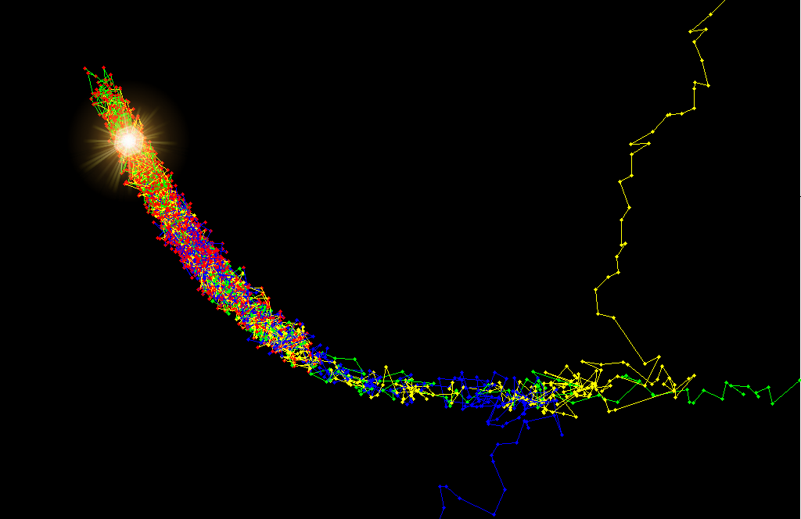

<p class="stack-center" style="z-index:100;color:lime;">
  <a href="https://en.wikipedia.org/wiki/Metropolis%E2%80%93Hastings_algorithm#/media/File:3dRosenbrock.png"
   <span style="font-size:150px; "> 谢谢!<span></a></p>
</p>


  The result of three Markov chains running on the 3D Rosenbrock function using the Metropolis-Hastings algorithm. The algorithm samples from regions where the posterior probability is high and the chains begin to mix in these regions. The approximate position of the maximum has been illuminated. Note that the red points are the ones that remain after the burn-in process. The earlier ones have been discarded.



